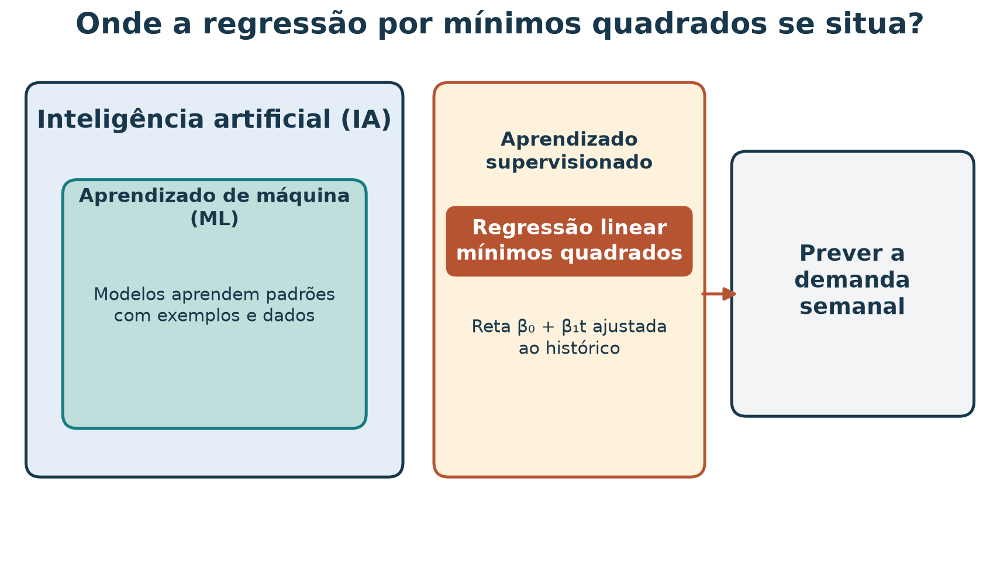
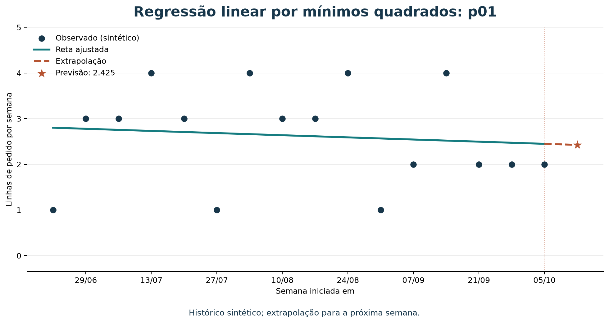
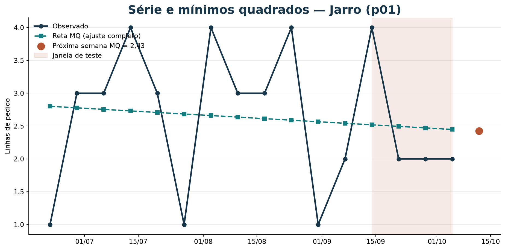
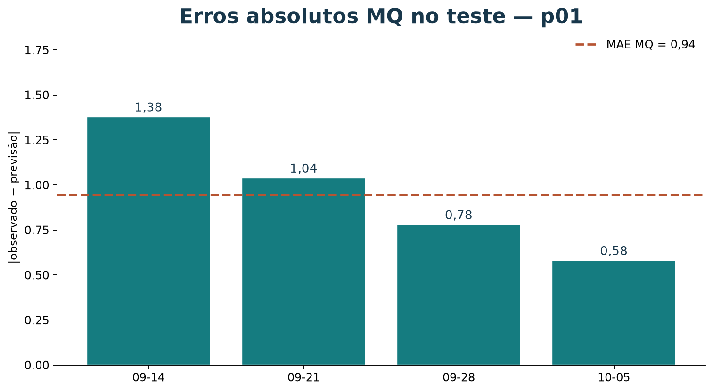
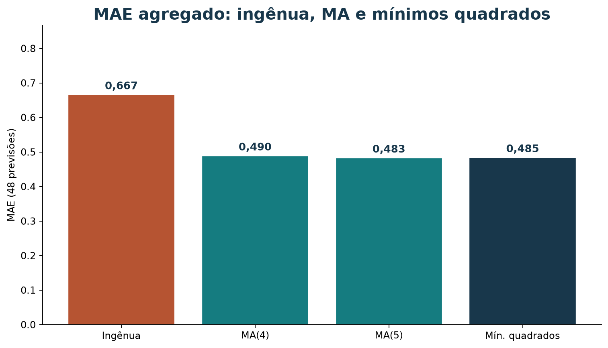

Previsão de demanda com regressão por mínimos quadrados
Leia a versão web com o explorador interativo incorporado.
Este tutorial parte da série semanal sintética do marketplace e do
protocolo walk-forward apresentado em tutorial-media-movel-demanda-20261017.md.
Você vai ajustar uma reta para cada produto usando regressão linear por
mínimos quadrados, extrapolar a tendência para a próxima semana e
comparar o resultado com médias móveis e uma previsão ingênua.
Os dados são sintéticos: as 16 semanas distribuem os totais do catálogo e não são vendas observadas. Resultados numéricos servem para reproduzir o método, não para afirmar que existe tendência real.
Roteiro
| Tempo sugerido | Atividade |
|---|---|
| 8 min | Relacionar regressão, aprendizado de máquina e previsão |
| 10 min | Entender o ajuste por mínimos quadrados |
| 10 min | Ajustar uma reta e prever demanda |
| 12 min | Avaliar com origem temporal deslizante |
| 15 min | Explorar a série com BI e exportar uma evidência |
| 10 min | Interpretar resultados, limitações e exercício |
1. Onde a regressão se situa
Na média móvel, a regra de previsão é definida diretamente como a média das últimas observações. Aqui, ajustaremos os coeficientes de uma reta a partir de exemplos históricos. Essa é uma forma simples de aprendizado supervisionado: cada semana fornece uma entrada (o tempo) e um alvo conhecido (a demanda observada).
Inteligência artificial (IA) é o campo amplo de sistemas que executam tarefas como aprender, raciocinar e apoiar decisões; aprendizado de máquina (ML) é uma área da IA em que algoritmos ajustam modelos a partir de dados. Regressão linear é uma técnica estatística que também é usada como modelo de ML quando seus parâmetros são aprendidos dos exemplos.

Figura 1 — A regressão linear liga exemplos de entrada e alvo a uma função ajustada. As relações são conceituais, não uma medida de tamanho das áreas.
O problema de negócio continua o mesmo: estimar linhas de pedido por produto por semana. Regressão não muda a unidade nem transforma os dados sintéticos em histórico real.
2. O que significa “mínimos quadrados”
Para um produto, associe a semana t à contagem observada
y_t. Uma reta prevê:
β₀é o intercepto: valor ajustado quandot = 0.β₁é a inclinação: variação média ajustada em linhas de pedido por semana.ŷ_té a previsão do modelo para a semanat.
Os dados raramente ficam todos exatamente numa reta. Para ajustar os coeficientes, mínimos quadrados escolhe a reta que minimiza a soma dos resíduos ao quadrado:
Um resíduo é observado menos previsto. Elevar ao quadrado penaliza erros grandes mais fortemente e evita que resíduos positivos e negativos se cancelem na soma.
O ajuste não prova que a demanda siga uma tendência linear. É uma aproximação cuja utilidade deve ser examinada em semanas futuras reservadas para teste. Além disso, uma reta pode produzir previsões negativas, embora contagens não possam ser negativas. Neste tutorial, aplicaremos um limite inferior de zero após prever; isso é uma decisão prática de pós-processamento, não parte do ajuste por mínimos quadrados.
3. Carregar a série e ajustar um produto
O arquivo tem 16 semanas, de 2026-06-22 a 2026-10-05, para 12
produtos. A coluna order_line_count conta linhas de pedido
semanais, não unidades físicas. O script de validação verifica que todas
as combinações produto/semana estão presentes e que os totais
reconciliam:
uv run python scripts/validar_vendas_semanais.pyO código a seguir reaproveita pandas para organizar a tabela e
LinearRegression do scikit-learn para ajustar a reta. Na
raiz do repositório, execute com:
uv run --with pandas pythonfrom pathlib import Path
import numpy as np
import pandas as pd
from sklearn.linear_model import LinearRegression
vendas = pd.read_csv(
Path("dados/vendas_semanais.csv"),
parse_dates=["week_start"],
)
matriz = vendas.pivot(
index="week_start",
columns="product_id",
values="order_line_count",
).sort_index()
produto = "p01"
serie = matriz[produto]
semanas = np.arange(len(serie)).reshape(-1, 1)
modelo = LinearRegression().fit(semanas, serie.to_numpy())
semana_seguinte = np.array([[len(serie)]])
previsao_bruta = float(modelo.predict(semana_seguinte)[0])
previsao = max(0.0, previsao_bruta)
print(f"Intercepto: {modelo.intercept_:.4f}")
print(f"Inclinação: {modelo.coef_[0]:.4f} linhas/semana")
print(f"Previsão bruta: {previsao_bruta:.4f}")
print(f"Previsão não negativa: {previsao:.4f}")Para Jarro (p01), o ajuste com as 16 semanas resulta
em:
A inclinação ajustada é aproximadamente −0,024 linha por
semana. Ao extrapolar para t = 16, a previsão é
2,425 linhas de pedido. A pequena inclinação negativa
descreve a reta que melhor ajusta esta amostra sintética; não demonstra
uma queda real de demanda.

Figura 2 — A reta resume a tendência linear ajustada ao histórico
de p01. O segmento futuro é uma extrapolação, não um valor
observado.
Previsões para todos os produtos
O mesmo ajuste, feito separadamente para cada produto, produz as previsões:
| Produto | Intercepto | Inclinação por semana | Previsão bruta | Após limite em zero |
|---|---|---|---|---|
Jarro barro Tracunhaém (p01) |
2,801 | −0,024 | 2,425 | 2,425 |
Prato esmaltado Tracunhaém (p02) |
1,904 | −0,021 | 1,575 | 1,575 |
Boneca de barro (p03) |
1,529 | −0,046 | 0,800 | 0,800 |
Rendeira Alto do Moura (p04) |
2,485 | −0,040 | 1,850 | 1,850 |
Toalha de renda (p05) |
1,640 | −0,035 | 1,075 | 1,075 |
Caminho de mesa renda (p06) |
0,897 | −0,028 | 0,450 | 0,450 |
Xilogravura Pilar (p07) |
2,213 | −0,037 | 1,625 | 1,625 |
Cordel ilustrado (p08) |
1,007 | 0,007 | 1,125 | 1,125 |
Quadro xilo colorido (p09) |
0,926 | −0,049 | 0,150 | 0,150 |
Cesto de palha (p10) |
1,875 | −0,050 | 1,075 | 1,075 |
Bolsa de palha (p11) |
0,963 | −0,012 | 0,775 | 0,775 |
Sousplat de palha (p12) |
1,029 | −0,071 | −0,100 | 0,000 |
Para p12, a reta prevê −0,1. Usar zero evita apresentar
uma contagem negativa, mas não garante uma distribuição válida nem
corrige o modelo. Com alvos de contagem, considere um modelo cuja saída
respeite a escala e o domínio do problema; também registre sempre
qualquer pós-processamento.
4. Avaliar respeitando o tempo
Usaremos as 12 primeiras semanas como histórico inicial e as quatro últimas como teste, tal como no tutorial da média móvel. Em cada semana de teste, ajustamos a reta novamente usando somente semanas anteriores e prevemos o próximo ponto. Após observar o resultado real daquela semana, ela pode entrar no histórico da previsão seguinte.
Para comparar escalas de erro:
RMSE penaliza erros grandes mais fortemente que MAE. Ambas as métricas estão em linhas de pedido por produto por semana.
inicio_teste = len(matriz) - 4
erros = []
for produto in matriz.columns:
serie = matriz[produto]
for posicao in range(inicio_teste, len(matriz)):
x_treino = np.arange(posicao).reshape(-1, 1)
y_treino = serie.iloc[:posicao].to_numpy()
modelo = LinearRegression().fit(x_treino, y_treino)
bruto = float(modelo.predict([[posicao]])[0])
previsto = max(0.0, bruto)
observado = float(serie.iloc[posicao])
erros.append(observado - previsto)
mae = np.mean(np.abs(erros))
rmse = np.sqrt(np.mean(np.square(erros)))
print(f"Previsões avaliadas: {len(erros)}")
print(f"MAE: {mae:.3f}")
print(f"RMSE: {rmse:.3f}")Saída neste conjunto:
Previsões avaliadas: 48
MAE: 0.485
RMSE: 0.629Comparar com referências simples
Todos os métodos abaixo usam exatamente os mesmos 48 pares produto/semana:
| Método | MAE | RMSE |
|---|---|---|
| Ingênua: última semana | 0,667 | — |
| Média móvel de 4 semanas | 0,490 | — |
| Média móvel de 5 semanas | 0,483 | — |
| Regressão linear, por produto | 0,485 | 0,629 |
A regressão tem MAE próximo ao das médias móveis. Neste pequeno teste, MA(5) fica ligeiramente abaixo da regressão, com diferença de cerca de 0,001 linha. Isso não estabelece um vencedor: são apenas quatro semanas sintéticas de teste. O RMSE é apresentado para a regressão, mas só deve ser comparado com RMSE das outras abordagens, não diretamente com os MAEs.
5. Interpretar o resultado
- Uma inclinação positiva ou negativa é a tendência linear estimada no histórico usado; não é causa nem garantia de continuidade.
- Prever além das semanas usadas para ajustar uma reta é extrapolar. Extrapolações longas são especialmente frágeis se a tendência mudar.
- A contagem é inteira, mas a previsão média pode ser fracionária. Não arredonde antes de calcular erros.
- O corte em zero evita valores negativos, mas altera a saída e
precisa ser documentado.
p12mostra essa situação neste próprio conjunto. - O modelo ajusta uma reta individual para cada produto. Com apenas 12 pontos iniciais em cada origem, a inclinação pode ser instável.
- O arquivo é sintético e foi construído para reconciliar totais agregados. Não permite concluir que exista tendência, sazonalidade ou desempenho real.
Para testar desempenho comercial, são necessários mais dados históricos observados, com datas, quantidades consistentes, estado dos pedidos, estoque e contexto de promoções ou rupturas. Faça a avaliação em ordem temporal e compare com baselines antes de implantar um modelo.
6. Como BI ajuda você a visualizar a reta
O explorador de mínimos quadrados mostra a série, a reta ajustada, os erros no teste e o MAE ao lado da média móvel e da previsão ingênua. Você pode usá-lo na versão web deste tutorial ou abrir o HTML local. Consulte o roteiro.
Experimente a reta neste tutorial
Escolha produto e método abaixo. Compare mínimos quadrados com média móvel e com a previsão ingênua. As 16 semanas são sintéticas.
As figuras abaixo espelham o painel na versão Markdown.

Figura 3 — Observações e reta do ajuste completo; o ponto terracota extrapola a semana seguinte. O MAE do teste, no painel, refaz o ajuste só com o passado.

Figura 4 — Erros walk-forward de mínimos quadrados em
p01.

Figura 5 — Mesmas 48 previsões para todos os métodos. Menor MAE é melhor nesta métrica; a diferença neste conjunto sintético é pequena.
Atividade rápida no painel
- Abra Jarro (
p01) com mínimos quadrados. Anote intercepto, inclinação e a previsão da próxima semana. - Na tabela do teste, confira uma semana à mão (ajuste só com o passado).
- Troque para MA(5) e diga o que muda no MAE do produto.
- Exporte um PNG ou o CSV do teste.
7. Exercício: inclinação da Boneca
Ajuste uma regressão linear para Boneca de barro (p03) e
responda:
- Qual é a inclinação estimada em linhas por semana? É positiva ou negativa?
- Qual é a previsão para a semana seguinte, antes e depois do limite em zero?
- Qual o MAE de
p03nas quatro semanas finais usando ajuste walk-forward? - Como a previsão de regressão se compara à média móvel de cinco semanas?
- Por que a inclinação não prova uma tendência real do marketplace?
Resolução comentada
Com as 16 semanas, p03 tem intercepto aproximado 1,5294,
inclinação −0,0456 linha por semana e previsão bruta 0,8 para
t = 16. Ela permanece 0,8 após o limite em zero.
Nas quatro semanas finais, a regressão por produto tem MAE aproximado
0,614 para p03; a média móvel de cinco
semanas tem MAE 0,600 no mesmo produto e nas mesmas
semanas. Os resultados são quase iguais e vêm de uma série sintética
curta; não demonstram qual método preverá melhor vendas futuras
reais.
Referência e reprodução
- SCIKIT-LEARN.
LinearRegression: mínimos quadrados ordinários para regressão linear. Documentação.
Gerar a figura
Na raiz do repositório, execute:
uv run --with scikit-learn python scripts/gerar_figuras_demanda.pyO script lê a série em dados/vendas_semanais.csv e
atualiza as ilustrações dos tutoriais de demanda em
material/imagens/.